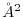

This command defines a contiguous patch of exposed atoms of region_size. First, the exposed atoms in the model are identified by using the atom_accessibility cutoff (in  ) (you must first assign accessibilities to every atom's Bfield, either by calling model.write_data() with 'PSA ATOMIC_SOL' output, or by manually assigning to Atom.biso). The seed atom is picked randomly among the exposed atoms. The patch is expanded by iteratively adding the exposed atom that is closest to the gravity center of the currently selected patch atoms. Thus, the patch is defined deterministically once the seed atom is picked. The patch is defined by setting the B
To obtain surface patches that look good in visual inspection, it is necessary to use a non-obvious scaling factor for atomic radii and probe radius for solvent calculation by model.write_data(), as well as the accessibility cutoff for model.make_region().
# Example for: model.make_region()
# This will define a random contiguous patch of atoms on a surface of the
# protein.
from modeller import *
env = environ(rand_seed=-18343)
log.level(1, 1, 1, 1, 0)
# Read the PDB file
mdl = model(env)
mdl.read(file='../atom_files/pdb1fdn.ent')
# Calculate atomic accessibilities (in Biso) with appropriate probe_radius
myedat = energy_data()
myedat.radii_factor = 1.6
mdl.write_data(edat=myedat, output='PSA ATOMIC_SOL',
psa_integration_step=0.05, probe_radius=0.1)
# Get the "random" patch of exposed atoms on the surface
mdl.make_region(atom_accessibility=0.5, region_size=35)
# Write out a PDB file with the patch indicated by Biso = 1:
mdl.write(file='1fdn.reg')
# Can also select the patch residues and use selection methods:
s = selection([a for a in mdl.atoms if a.biso > 0.99])
print "%d atoms in surface patch" % len(s)